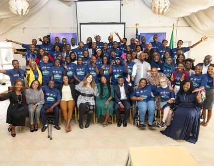

1. Problem Statement: Closing the Youth Leadership & Civic Capacity Gap
Many young people today lack the structured opportunities, institutional networks, and practical resources required to develop essential public leadership skills. Without access to quality leadership training and seasoned mentorship, emerging graduates, community advocates, and young professionals are often left under-equipped to tackle complex socio-economic and environmental challenges in their communities.
This gap in leadership development is particularly acute in regions with limited educational-to-professional pipelines, leaving talented young individuals without the tools to engage effectively in civic decision-making, public administration, and social enterprise.
The Umaru Musa Fellowship Initiative (UMFI) is designed to bridge this divide by offering a comprehensive fellowship that combines rigorous leadership training with hands-on community involvement. Through structured mentorship, skill-building workshops, policy research labs, and field service projects, the fellowship empowers young leaders to become proactive citizens and ethical change-makers capable of transforming their communities.

2. Description of the Innovation, Mission & Vision
Named in homage to Umaru Musa Yar'Adua, UMFI offers a dedicated platform where aspiring leaders immerse themselves in a learning community embodying innovation, inclusivity, ethical service, and measurable community impact. Participants are not passive attendees; they are trained as catalysts for positive transformation.
Over eight intensive weeks (including five weeks of core residential/field workshops, lectures, and community project execution for a target cohort of 45 fellows), the programme merges personalized mentorship from seasoned public and civic leaders with collaborative research and civic action. Fellows form a durable alumni network that extends far beyond the programme's duration.
| Institutional Pillar | Mandate & Strategic Direction |
|---|---|
| Core Tagline | Empower. Innovate. Transform. (Primary Sectors: Education, Decent Jobs, Civic Governance & Sustainable Development) |
| Mission Statement | To inspire, empower, and equip young leaders with the skills, ethical values, and professional networks needed to make meaningful contributions to their communities and the world at large. |
| Vision Statement | To create a cadre of visionary leaders who, inspired by the principles exemplified by Umaru Musa Yar'Adua, will drive positive and sustainable change in their communities and beyond—nurturing individual leadership potential alongside a collective commitment to social responsibility, innovation, and ethical leadership. |
3. Programme Objectives & Target Demographic (Ages 20–35)
The Umaru Musa Fellowship Initiative commences with formal orientation and induction, setting the stage for intensive leadership training and workshops that hone decision-making, public communication, policy analysis, and ethical stewardship.
3.1 Ten Core Programme Objectives
- 1. Empowering Future Leaders: Cultivating self-aware, principled youth leaders ready to assume civic and institutional responsibility.
- 2. Building Professional & Peer Networks: Connecting fellows with mentors, policymakers, academic institutions, and civil society pioneers.
- 3. Capacity Building: Developing practical competencies in project management, policy brief writing, digital literacy, and community mobilization.
- 4. Promoting Civic Engagement: Embedding a culture of active citizenship, constitutional literacy, and grassroots accountability.
- 5. Advancing the Legacy of Umaru Musa Yar'Adua: Institutionalizing servant leadership, transparency, rule of law, and educational excellence.
- 6. Leadership Development: Strengthening executive communication, negotiation, conflict resolution, and team coordination.
- 7. Research and Innovation: Training fellows to design evidence-based solutions to local education, employment, and environmental challenges.
- 8. Cross-Cultural Understanding: Fostering inclusive dialogue and collaboration across diverse communities and backgrounds.
- 9. Policy Advocacy: Equipping fellows to engage constructively with state ministries, legislatures, and development agencies.
- 10. Measurable Community Impact: Ensuring every cohort executes tangible community service and innovation projects.
3.2 Target Audience & Cohort Composition
UMFI targets youth aged 20 to 35 who demonstrate five core attributes: (i) Commitment to Leadership; (ii) Diversity Across Sectors; (iii) Passion for Civic Engagement; (iv) Innovation and Research Orientation; and (v) Cross-Cultural Perspectives. Engaging this demographic is vital for leadership continuity, cross-sectoral collaboration, capacity building, innovation, social impact, and global competitiveness in Katsina State and across Nigeria.
| Target Fellow Profile | Role in the UMFI Cohort |
|---|---|
| 1. Professionals Across Sectors | Early-career educators, civil servants, health workers, and private-sector specialists seeking public-leadership skills. |
| 2. Community Advocates | Grassroots organizers working on education access, youth employment, women's empowerment, and environmental stewardship. |
| 3. Youth Leaders | Student union leaders, youth council representatives, and civic club coordinators. |
| 4. Young Researchers & Innovators | University graduates and postgraduate scholars translating academic research into practical public policy and social innovation. |
| 5. Social Entrepreneurs | Founders of youth-led enterprises creating decent jobs, green skills, and local economic value. |
| 6. Emerging Public Leaders | Aspiring policy analysts and public administrators committed to ethical governance in Katsina State and Nigeria. |

4. Dual Value Proposition: Benefits to Participants & State Government
UMFI is structured so that every cohort generates simultaneous value for both individual fellows and public institutions in Katsina State and beyond.
| Pillar | Benefits to Fellowship Participants | Benefits to State Government & Public Institutions |
|---|---|---|
| 01 | Skill Enhancement: Hands-on transition from theoretical academic knowledge to practical project management, communication, and leadership application. | Robust Leadership Pipeline: Identifies, trains, and nurtures capable, forward-thinking emerging leaders ready to contribute within public service and governance ranks. |
| 02 | Network Building: Lasting peer bonds and direct mentorship connections with seasoned leaders across government, academia, and industry. | Innovation & Policy Research: Fellows produce actionable research, policy proposals, and community diagnostics addressing state socio-economic priorities. |
| 03 | Global & Cross-Cultural Exposure: Broadened perspectives on global best practices in governance, decent work, and sustainable development. | Positive Public Image & Trust: Demonstrates visible institutional investment in merit-based youth empowerment and civic inclusion. |
| 04 | Career Advancement: Enhanced employability, enterprise readiness, and leadership credentials for decent jobs and public service. | Evidence-Informed Policy Support: Strengthens civic-government feedback loops and youth participation in policy implementation. |
| 05 | Civic Engagement: Direct experience designing and executing community-level service interventions. | Grassroots Community Development: Multiplies state development reach through fellow-led community projects across local government areas. |
5. Implementation Roadmap, 16-Stage Timeline & Programme Logistics
To move UMFI from concept to execution, the proposal outlines a three-phase development and scaling architecture supported by a 16-stage operational cycle.
5.1 Three-Phase Rollout Plan
Phase 1: Development & Curriculum Design
Conduct a comprehensive baseline needs assessment and stakeholder consultations to finalize the 8-week curriculum. Formalize partnerships with universities (such as Umaru Musa Yar'Adua University, Katsina), state ministries, NGOs, and philanthropic sponsors to assemble faculty, mentors, and technical resources.
Phase 2: Pilot Implementation (8-Week Cohort • 45 Fellows)
Launch the inaugural pilot cohort with transparent, merit-based recruitment across social media, universities, and local community networks. Select 45 high-potential participants based on leadership promise and community commitment, and deliver structured modules, mentorship, and hands-on civic projects.
Phase 3: National & Regional Scaling
Expand the fellowship footprint by forming multi-year alliances with state governments, development foundations, and international organizations. Continuously evaluate and refine curriculum modules using graduate outcome metrics and community impact assessments.
5.2 The 16-Stage Fellowship Lifecycle
| Phase | Lifecycle Stage | Operational Deliverable |
|---|---|---|
| Stage I – V | Recruitment & Selection | (i) Pre-Announcement Phase; (ii) Official Programme Announcement & Eligibility Release; (iii) Application Review; (iv) Interviews & Competency Assessment; (v) Announcement of Selected Fellows. |
| Stage VI – VIII | Induction & Core Training | (vi) Orientation & Induction; (vii) Intensive Leadership Training & Workshops; (viii) Structured One-on-One Mentorship Launch. |
| Stage IX – XII | Applied Innovation & Field Service | (ix) Research & Innovation Projects; (x) Cross-Cultural Learning Experiences; (xi) Community Engagement Initiatives; (xii) Global & Policy Exposure Dialogues. |
| Stage XIII – XVI | Evaluation & Alumni Network | (xiii) Regular Progress Evaluation; (xiv) Networking Events & Policy Conferences; (xv) Closing Ceremony & Alumni Network Establishment; (xvi) Post-Fellowship Support & Longitudinal Evaluation. |
5.3 Pilot Cohort Resource & Equipment Specification (45 Participants / 5 Intensive Weeks)
- Digital & Learning Equipment: Laptop/tablet access, dedicated Wi-Fi connectivity, dual USB drives, fellowship handbook/curriculum guide, notepads, pens, sticky notes, and official ID cards.
- Fellowship Kit & Welfare: Formal fellowship acceptance dossier, customized water bottles, training outfits, branded materials (T-shirts, caps, pens, mugs), first-aid kit, hand sanitizers, toiletries, and emergency contact registry.
- Institutional & Field Logistics: 50-seat capacity coaster bus with 5-week fuel allocation, full catering for 45 participants (3 meals daily across 5 residential/field weeks), fellow stipends/allowances, workshop lecture and community engagement budget, capstone project execution seed funds, and official completion certificates.

6. Risk Mitigation & Long-Term Sustainability Framework
To ensure institutional durability and accountability to sponsors and public partners, UMFI incorporates a proactive risk-management matrix alongside seven long-term sustainability strategies.
| Risk / Operational Challenge | Identified Vulnerability | Mitigation & Governance Safeguard |
|---|---|---|
| 1. Recruitment & Selection | Difficulty attracting a balanced, diverse cohort of qualified youth across all local government areas. | Deploy targeted grassroots and campus outreach, collaborate with local CSO/academic partners, and enforce transparent, merit-based selection criteria. |
| 2. Resource Constraints | Limited initial funding for residential logistics, stipends, and capstone seed grants. | Secure diversified funding through development grants, state partnerships, and corporate sponsorship while optimizing modular resource allocation. |
| 3. Programme Effectiveness | Ensuring training translates into measurable leadership growth and real community outcomes. | Design a competency-based curriculum, conduct weekly evaluations, and pair fellows with active mentors throughout project execution. |
| 4. Long-Term Sustainability | Maintaining momentum, alumni engagement, and relevance across subsequent annual cohorts. | Establish an active UMFI Alumni Network, publish annual impact scorecards, and adapt modules to evolving economic and civic priorities. |
| 5. Stakeholder Engagement | Managing expectations across government ministries, sponsors, universities, and host communities. | Maintain clear Memoranda of Understanding (MoUs), transparent financial/output reporting, and regular stakeholder review briefings. |
Seven Pillars for Long-Term Sustainability
1. Diversified Funding Architecture
Combine philanthropic grants, state government youth-development partnerships, corporate social responsibility (CSR) sponsorships, and alumni contributions to ensure multi-year financial stability.
2. Active Alumni Network & Mentorship Loop
Engage graduating fellows through continuous professional development, policy working groups, and peer mentorship of incoming cohorts.
3. Strategic Institutional Partnerships
Build enduring alliances with universities, state ministries of education and youth development, civil society coalitions, and international leadership institutes.
4. Rigorous Monitoring & Evaluation (M&E)
Track fellow career progression, civic project outcomes, and stakeholder feedback at 6-month and 12-month intervals to refine curriculum delivery.
5. Deep Community Integration
Co-design fellow capstone projects with local community leaders and municipal institutions so interventions address verified local needs and build local ownership.
6. Faculty & Staff Capacity Building
Invest in continuous training for programme facilitators, mentors, and volunteers while establishing clear leadership succession plans.
7. Evidence-Based Advocacy & Visibility
Document and publish fellow-led innovations, policy briefs, and community transformation stories to demonstrate measurable return on investment and attract long-term partners.